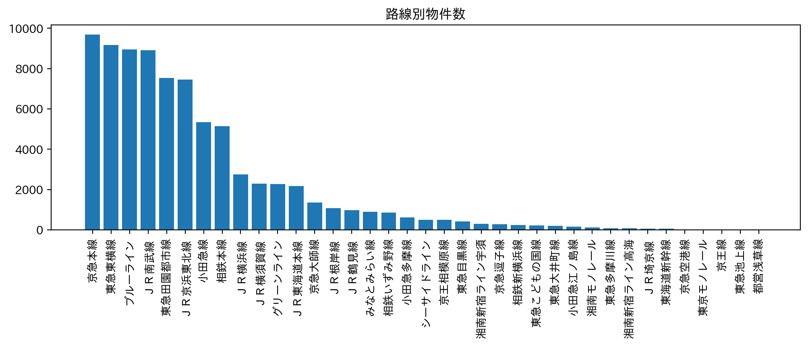
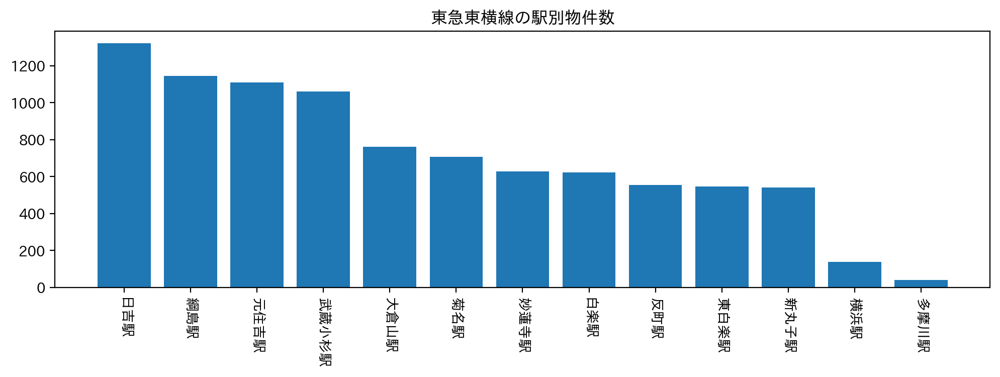
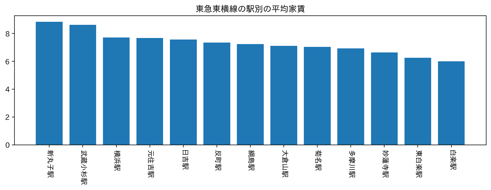

賃貸情報の分析
ターゲットを「神大生」とし、おすすめの駅を挙げようと思う。

路線別物件数を見たところ、「京急本線」に続き「東急東横線」が並ぶ。今回は、横浜キャンパスの最寄り駅「白楽駅」があるだけでなく、みなとみらいキャンパスの最寄り駅「新高島駅」「みなとみらい駅」にも直通で行くことができる東急東横線をピックアップする。

まず、東急東横線の駅別物件数を見ると、「日吉駅」「綱島駅」「元住吉駅」が上位に並ぶ。

次に、東急東横線の駅別の平均家賃を見るが、ここで注目してほしいのは「綱島駅」が13位中7位に位置していることだ。これは、綱島駅が平均家賃の中央値であることを意味する。
したがって、物件数が多く、家賃が高すぎることもない「綱島駅」をおすすめしたい。